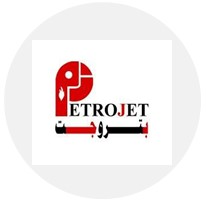
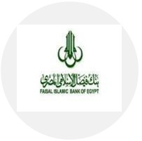
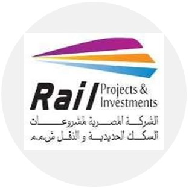
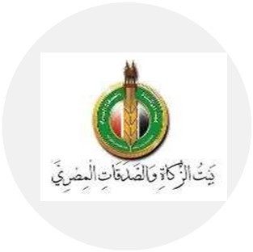

Projets de Consultant
Chiffres et Statistiques Importants
- +400 : KPI - Indicateurs de Performance Clés au niveau global, départemental et individuel
- +800 : Recrutement, tri des candidats, interviews, sélection
- +1500 : Fiches de poste - collecte d'informations, analyse des postes, évaluation
- +32 : Structures organisationnelles et manuels - définition des objectifs commerciaux, répartition des tâches, liaison des départements
- +35 : Enquêtes sur les salaires et avantages - profilage des postes, correspondance des postes, analyse des données
- +11 : Schémas de rémunération - plans à long et court terme, récompenses liées à la performance
- +900 : Politiques et procédures - conception des formulaires nécessaires
- +10 : Plans de recrutement et de main-d'œuvre - prévision des besoins, gestion des pénuries ou surplus

Petrojet
- Création des KPIs.
- Structure organisationnelle.
- Manuel organisationnel.
- Élaboration des descriptions de poste.

Banque Islamique Faisal
- Recrutement de nouveaux diplômés.
- Préparation des descriptions de poste.
- Manuel organisationnel.
- Réalisation d'enquêtes sur les salaires et avantages sociaux.
- Développement de l'échelle salariale.

Hossam & Elsayed construction
- Recruiting and Hiring.
- Compensation schemes & job grading
- Organization Chart.
- Organization Manual.
- Prepared Job Descriptions.
- Preview Policy & Procedures.

Rail Project & investment
- Organization Chart.
- Organization Manual.
- Compensation schemes & job grading
- Prepared Job Descriptions.
- Policy & Procedures.

National Cancer Institute
- Strategic Plan.
- Organization chart.
- Organization Manual.
- Prepared Job Descriptions.
- Policy & Procedures.

SUMED
- Organization chart.
- Organization Manual.
- Prepared Job Descriptions.
- Design KPIs
- Policy & Procedures.
Seldar Misr
- Recruitment Plan.
- Compensation schemes.
- Develop Job Description.
- Organization Manual.
- Design KPIs
- Policy & Procedures.

The Egyptian House of Zakat and Charities
- Strategic Plan.
- Recruitment Plan.
- Organization chart.
- Develop Job Description.
- Organization Manual.
- Policy & Procedures.

MASSAFI
- Organization Chart.
- Organization Manual.
- Employee Handbook.
- Compensation schemes & job grading
- Prepared Job Descriptions.
- Policy & Procedures.
- Design KPIs

PCE Consulting
- Strategic Plan.
- Recruitment Plan.
- Organization Chart.
- Organization Manual.
- Compensation schemes & job grading
- Prepared Job Descriptions.
- Policy & Procedures.
- Design KPIs
Ellaithy Auto Group
- Organization Chart.
- Organization Manual.
- Representing the company in implementation ERP system process
- Prepared Job Descriptions.
- Policy & Procedures.
- Recruiting Sales Team for a New Branch

CIB Bank
- Salary & Benefit Survey.(2012).
- Market inductor(2013)

NSGB Bank
- Salary & Benefit Survey.(2012).
- Salary & Benefit Survey.(2013).

Movenpick
- Salary & Benefit Survey.(2012).

Hilton
- Salary & Benefit Survey.(2013).
British American Tobacco
- HR Audit.
This page showcases my participation in Organizational Development (OD) and recruitment projects for various clients, including some of the most notable names listed above. A significant portion of these projects were conducted in collaboration with KPMG Egypt, as well as a number of projects completed as a freelance consultant.